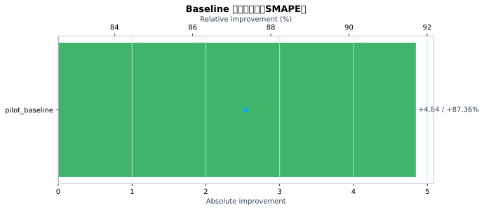
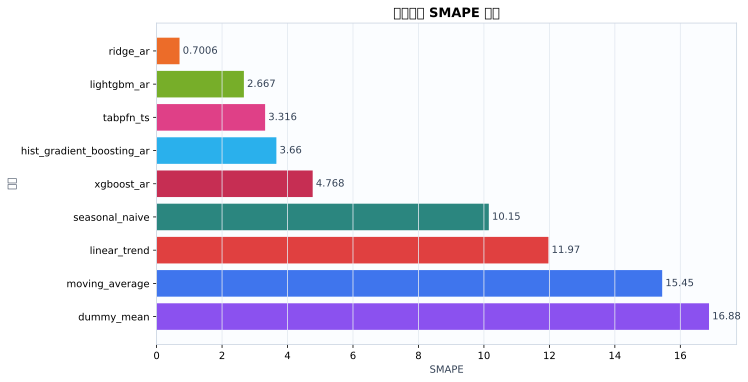
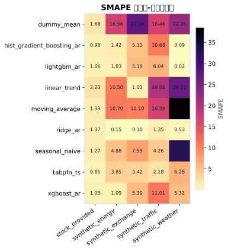
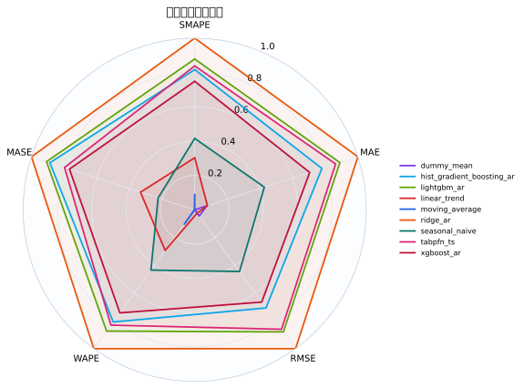
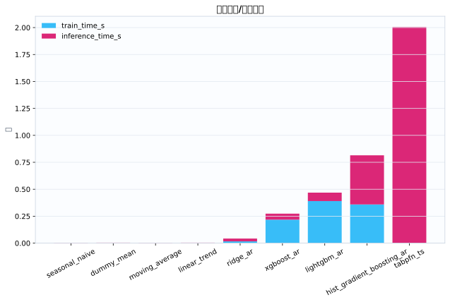
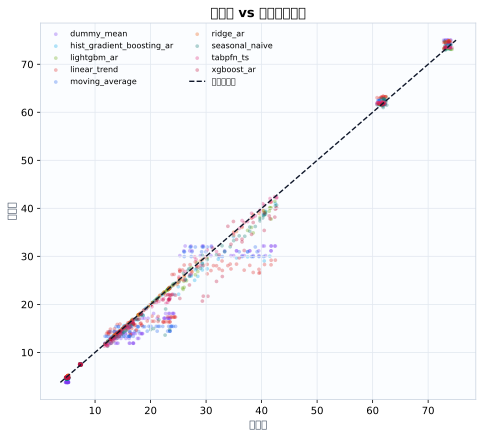
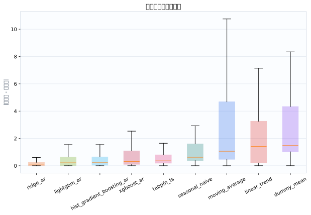

数据集5
模型9
指标行数45
预测行数6048
结论摘要
- 主指标 SMAPE 下，当前 run 的最佳模型是 ridge_ar，平均值为 0.7006。
- 相对 baseline pilot_baseline，当前最佳模型在 SMAPE 上提升 87.36% （absolute=+4.844）。
核心指标卡片
SMAPE
0.7006
最佳模型: ridge_ar
GPU_MEMORY_MB
0
最佳模型: dummy_mean
INFERENCE_TIME_S
0.003513
最佳模型: seasonal_naive
MAE
0.2237
最佳模型: ridge_ar
MASE
0.3532
最佳模型: ridge_ar
MSE
0.1713
最佳模型: ridge_ar
RMSE
0.2918
最佳模型: ridge_ar
TRAIN_TIME_S
0
最佳模型: tabpfn_ts
Baseline 对比
| baseline | metric | current_model | current_value | baseline_model | baseline_value | absolute_difference | relative_improvement_pct |
|---|---|---|---|---|---|---|---|
| pilot_baseline | smape | ridge_ar | 0.7006 | ridge_ar | 5.545 | 4.844 | 87.36 |
动态交互图表
指标排名动态图
残差直方图
效率-精度散点图
数据集排名轨迹
Matplotlib 可视化图表
Baseline 改变量图
{kind=link}

Baseline/模型平均指标柱状图
{kind=link}

数据集-模型热力图
{kind=link}

多指标雷达图
{kind=link}

运行时间图
{kind=link}

真实值-预测值散点图
{kind=link}

残差箱线图
{kind=link}

训练过程曲线
N/A：当前 run 目录未发现 loss/accuracy/TensorBoard/wandb 训练曲线文件。
错误分析与样本分析
当前支持预测任务的残差与真实-预测散点分析；分类 confusion matrix / ROC / PR 曲线需要真实分类输出后自动启用。
原始 Metrics
| run_id | model | dataset | domain | horizon | context_length | mse | mae | rmse | smape | wape | mase | train_time_s | inference_time_s | gpu_memory_mb |
|---|---|---|---|---|---|---|---|---|---|---|---|---|---|---|
| tabpfn_ts_20260528_155320 | dummy_mean | synthetic_energy | energy | 48 | 192 | 8.582 | 2.419 | 2.93 | 16.56 | 15.8 | 5.823 | 0.000545 | 0.005029 | 0 |
| tabpfn_ts_20260528_155320 | seasonal_naive | synthetic_energy | energy | 48 | 192 | 0.576 | 0.72 | 0.7589 | 4.879 | 4.703 | 1.733 | 0.0004055 | 0.004632 | 0 |
| tabpfn_ts_20260528_155320 | moving_average | synthetic_energy | energy | 48 | 192 | 3.744 | 1.624 | 1.935 | 10.7 | 10.61 | 3.908 | 0.00043 | 0.004672 | 0 |
| tabpfn_ts_20260528_155320 | linear_trend | synthetic_energy | energy | 48 | 192 | 3.206 | 1.595 | 1.79 | 10.5 | 10.42 | 3.839 | 0.0003942 | 0.00519 | 0 |
| tabpfn_ts_20260528_155320 | ridge_ar | synthetic_energy | energy | 48 | 192 | 0.0008416 | 0.02209 | 0.02901 | 0.1507 | 0.1443 | 0.05317 | 0.02303 | 0.03594 | 0 |
| tabpfn_ts_20260528_155320 | hist_gradient_boosting_ar | synthetic_energy | energy | 48 | 192 | 0.1611 | 0.2354 | 0.4014 | 1.421 | 1.537 | 0.5665 | 0.4504 | 0.4932 | 0 |
| tabpfn_ts_20260528_155320 | lightgbm_ar | synthetic_energy | energy | 48 | 192 | 0.1169 | 0.1741 | 0.3419 | 1.032 | 1.137 | 0.4191 | 0.4438 | 0.1023 | 0 |
| tabpfn_ts_20260528_155320 | xgboost_ar | synthetic_energy | energy | 48 | 192 | 0.09255 | 0.179 | 0.3042 | 1.087 | 1.169 | 0.4308 | 0.2602 | 0.05421 | 0 |
| tabpfn_ts_20260528_155320 | tabpfn_ts | synthetic_energy | energy | 48 | 192 | 0.3815 | 0.5605 | 0.6176 | 3.849 | 3.661 | 1.349 | 0 | 2.953 | 0 |
| tabpfn_ts_20260528_155320 | dummy_mean | synthetic_traffic | traffic | 48 | 192 | 39.34 | 5.455 | 6.272 | 16.46 | 16.26 | 4.017 | 0.0004692 | 0.003317 | 0 |
| tabpfn_ts_20260528_155320 | seasonal_naive | synthetic_traffic | traffic | 48 | 192 | 2.684 | 1.458 | 1.638 | 4.257 | 4.345 | 1.074 | 0.0003179 | 0.003433 | 0 |
| tabpfn_ts_20260528_155320 | moving_average | synthetic_traffic | traffic | 48 | 192 | 40.34 | 5.497 | 6.352 | 16.59 | 16.38 | 4.048 | 0.0002894 | 0.003486 | 0 |
| tabpfn_ts_20260528_155320 | linear_trend | synthetic_traffic | traffic | 48 | 192 | 65.57 | 6.486 | 8.097 | 19.88 | 19.33 | 4.776 | 0.0002869 | 0.003876 | 0 |
| tabpfn_ts_20260528_155320 | ridge_ar | synthetic_traffic | traffic | 48 | 192 | 0.3402 | 0.4607 | 0.5833 | 1.353 | 1.373 | 0.3392 | 0.01586 | 0.02574 | 0 |
| tabpfn_ts_20260528_155320 | hist_gradient_boosting_ar | synthetic_traffic | traffic | 48 | 192 | 23.74 | 3.456 | 4.873 | 10.68 | 10.3 | 2.545 | 0.3713 | 0.532 | 0 |
| tabpfn_ts_20260528_155320 | lightgbm_ar | synthetic_traffic | traffic | 48 | 192 | 4.943 | 1.921 | 2.223 | 6.036 | 5.724 | 1.414 | 0.3923 | 0.07098 | 0 |
| tabpfn_ts_20260528_155320 | xgboost_ar | synthetic_traffic | traffic | 48 | 192 | 16.26 | 3.334 | 4.033 | 11.01 | 9.934 | 2.455 | 0.2154 | 0.06166 | 0 |
| tabpfn_ts_20260528_155320 | tabpfn_ts | synthetic_traffic | traffic | 48 | 192 | 0.6896 | 0.6699 | 0.8304 | 2.177 | 1.996 | 0.4933 | 0 | 2.119 | 0 |
| tabpfn_ts_20260528_155320 | dummy_mean | synthetic_weather | weather | 48 | 192 | 22.63 | 4.49 | 4.757 | 22.35 | 20.32 | 28 | 0.0003862 | 0.002421 | 0 |
| tabpfn_ts_20260528_155320 | seasonal_naive | synthetic_weather | weather | 48 | 192 | 41.83 | 6.191 | 6.468 | 32.75 | 28.02 | 38.6 | 0.000297 | 0.00261 | 0 |
| tabpfn_ts_20260528_155320 | moving_average | synthetic_weather | weather | 48 | 192 | 53.97 | 7.176 | 7.346 | 38.51 | 32.48 | 44.75 | 0.0002935 | 0.002522 | 0 |
| tabpfn_ts_20260528_155320 | linear_trend | synthetic_weather | weather | 48 | 192 | 29.4 | 5.167 | 5.422 | 26.21 | 23.39 | 32.22 | 0.0002872 | 0.002716 | 0 |
| tabpfn_ts_20260528_155320 | ridge_ar | synthetic_weather | weather | 48 | 192 | 0.01864 | 0.1177 | 0.1365 | 0.5313 | 0.5329 | 0.7342 | 0.01105 | 0.01709 | 0 |
| tabpfn_ts_20260528_155320 | hist_gradient_boosting_ar | synthetic_weather | weather | 48 | 192 | 0.0006981 | 0.01934 | 0.02642 | 0.08714 | 0.08754 | 0.1206 | 0.2605 | 0.2992 | 0 |
| tabpfn_ts_20260528_155320 | lightgbm_ar | synthetic_weather | weather | 48 | 192 | 2.258e-05 | 0.00381 | 0.004752 | 0.01735 | 0.01724 | 0.02376 | 0.2694 | 0.04804 | 0 |
| tabpfn_ts_20260528_155320 | xgboost_ar | synthetic_weather | weather | 48 | 192 | 2.283 | 1.185 | 1.511 | 5.318 | 5.363 | 7.388 | 0.1965 | 0.04775 | 0 |
| tabpfn_ts_20260528_155320 | tabpfn_ts | synthetic_weather | weather | 48 | 192 | 2.497 | 1.38 | 1.58 | 6.285 | 6.245 | 8.604 | 0 | 1.566 | 0 |
| tabpfn_ts_20260528_155320 | dummy_mean | synthetic_exchange | economics | 48 | 192 | 1.463 | 1.201 | 1.209 | 27.34 | 24.09 | 24.68 | 0.0004063 | 0.003371 | 0 |
| tabpfn_ts_20260528_155320 | seasonal_naive | synthetic_exchange | economics | 48 | 192 | 0.1538 | 0.3659 | 0.3922 | 7.594 | 7.339 | 7.521 | 0.0003148 | 0.003445 | 0 |
| tabpfn_ts_20260528_155320 | moving_average | synthetic_exchange | economics | 48 | 192 | 0.2524 | 0.4813 | 0.5024 | 10.1 | 9.655 | 9.894 | 0.000292 | 0.003515 | 0 |
| tabpfn_ts_20260528_155320 | linear_trend | synthetic_exchange | economics | 48 | 192 | 0.003267 | 0.05126 | 0.05716 | 1.029 | 1.028 | 1.054 | 0.0002972 | 0.003794 | 0 |
| tabpfn_ts_20260528_155320 | ridge_ar | synthetic_exchange | economics | 48 | 192 | 2.859e-05 | 0.004872 | 0.005347 | 0.09751 | 0.09772 | 0.1001 | 0.01573 | 0.02544 | 0 |
| tabpfn_ts_20260528_155320 | hist_gradient_boosting_ar | synthetic_exchange | economics | 48 | 192 | 0.08334 | 0.2512 | 0.2887 | 5.126 | 5.038 | 5.163 | 0.3791 | 0.5355 | 0 |
| tabpfn_ts_20260528_155320 | lightgbm_ar | synthetic_exchange | economics | 48 | 192 | 0.08505 | 0.254 | 0.2916 | 5.185 | 5.095 | 5.221 | 0.4271 | 0.08432 | 0 |
| tabpfn_ts_20260528_155320 | xgboost_ar | synthetic_exchange | economics | 48 | 192 | 0.09039 | 0.2637 | 0.3007 | 5.391 | 5.29 | 5.421 | 0.1994 | 0.05776 | 0 |
| tabpfn_ts_20260528_155320 | tabpfn_ts | synthetic_exchange | economics | 48 | 192 | 0.04322 | 0.1694 | 0.2079 | 3.42 | 3.398 | 3.482 | 0 | 1.732 | 0 |
| tabpfn_ts_20260528_155320 | dummy_mean | stock_provided | finance | 48 | 192 | 0.8926 | 0.6824 | 0.9448 | 1.678 | 1.436 | 0.7172 | 0.0004792 | 0.003493 | 0 |
| tabpfn_ts_20260528_155320 | seasonal_naive | stock_provided | finance | 48 | 192 | 0.5267 | 0.5104 | 0.7258 | 1.27 | 1.074 | 0.5364 | 0.0003125 | 0.003444 | 0 |
| tabpfn_ts_20260528_155320 | moving_average | stock_provided | finance | 48 | 192 | 0.4378 | 0.5146 | 0.6617 | 1.329 | 1.083 | 0.5408 | 0.0002858 | 0.003475 | 0 |
| tabpfn_ts_20260528_155320 | linear_trend | stock_provided | finance | 48 | 192 | 1.126 | 0.886 | 1.061 | 2.231 | 1.864 | 0.9311 | 0.0002827 | 0.003821 | 0 |
| tabpfn_ts_20260528_155320 | ridge_ar | stock_provided | finance | 48 | 192 | 0.4967 | 0.5132 | 0.7048 | 1.37 | 1.08 | 0.5393 | 0.0163 | 0.02606 | 0 |
| tabpfn_ts_20260528_155320 | hist_gradient_boosting_ar | stock_provided | finance | 48 | 192 | 0.1348 | 0.2858 | 0.3671 | 0.9849 | 0.6012 | 0.3003 | 0.3333 | 0.4196 | 0 |
| tabpfn_ts_20260528_155320 | lightgbm_ar | stock_provided | finance | 48 | 192 | 0.2025 | 0.3307 | 0.45 | 1.063 | 0.6959 | 0.3476 | 0.4186 | 0.08584 | 0 |
| tabpfn_ts_20260528_155320 | xgboost_ar | stock_provided | finance | 48 | 192 | 0.208 | 0.3444 | 0.4561 | 1.032 | 0.7247 | 0.362 | 0.2169 | 0.05721 | 0 |
| tabpfn_ts_20260528_155320 | tabpfn_ts | stock_provided | finance | 48 | 192 | 0.133 | 0.2731 | 0.3647 | 0.8472 | 0.5747 | 0.2871 | 0 | 1.653 | 0 |
配置参数
展开/折叠配置
{
"/home/wanyi/zy_test/tabpfn-ts-benchmark/configs/config.yaml": {
"defaults": [
{
"dataset": "etth1"
},
{
"model": "seasonal_naive"
},
{
"experiment": "e1_zeroshot"
},
"_self_"
],
"seed": 42,
"output_dir": "results",
"wandb": {
"project": "tabpfn-quant",
"mode": "offline",
"entity": null
},
"hydra": {
"run": {
"dir": "outputs/${now:%Y-%m-%d}/${now:%H-%M-%S}"
}
}
}
}运行环境
{
"python": "3.10.12",
"platform": "Linux-6.8.0-111-generic-x86_64-with-glibc2.35",
"git_head": "N/A",
"git_dirty": false
}Warnings
- 无
产物链接
- metrics.json
- summary.csv
- 源 run 目录: /home/wanyi/zy_test/tabpfn-ts-benchmark/results/full_benchmark_v2_c192_h48_s3
- 主指标: smape